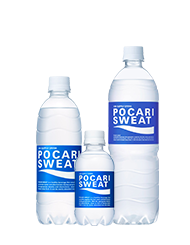
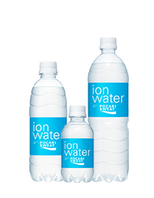
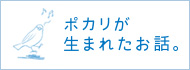
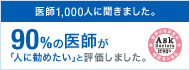
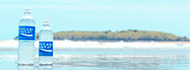

ポカリスエット基本情報
イオンウォーター基本情報
ポカリスエットの歴史
ポカリスエット誕生秘話
日常生活にイオンウォーター
イオンウォーターパウダータイプ
ポカリスエットゼリー
販売地域
よくあるQ&A
なぜ水分補給に適しているか？
甘さには理由があります
からだを長時間うるおす理由
多くの研究データを蓄積！
医師も評価するポカリスエット
起床時や就寝前に
入浴前や入浴後に
運動能力の維持に
お酒を飲んだ時に
乗り物での移動中に
デスクワーク時に
熱中症対策に
乾燥の季節に
身体と水の深い関係
どうして汗をかくの？
“シーン別”汗をかく量は？
自発的脱水とは？
運動しなくても渇いている
水分補給のタイミング
子どもの水分補給の大切さ
高齢者の水分補給の大切さ
働く人の熱中症対策
トヨタの走りをサポートするポカリスエット
ルミナプロジェクト
東京マラソン2017
ブカツのミカタ
サーモス×ポカリスエット コラボ
エールと、ともに。
フェスといえばポカリスエット
「キミの夢は、ボクの夢。」楽譜で応援！
ポカリスエットは、こんなチャレンジも
 からだを長時間うるおす理由
からだを長時間うるおす理由 乾燥の季節に
乾燥の季節に ブカツのミカタ
ブカツのミカタ